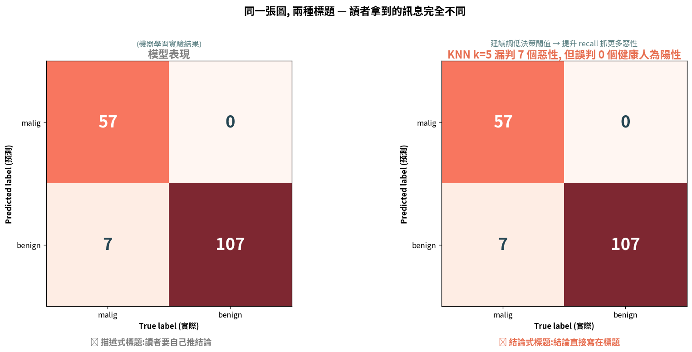
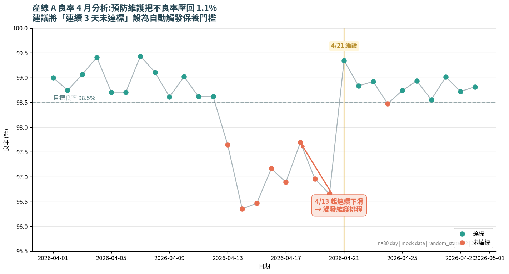
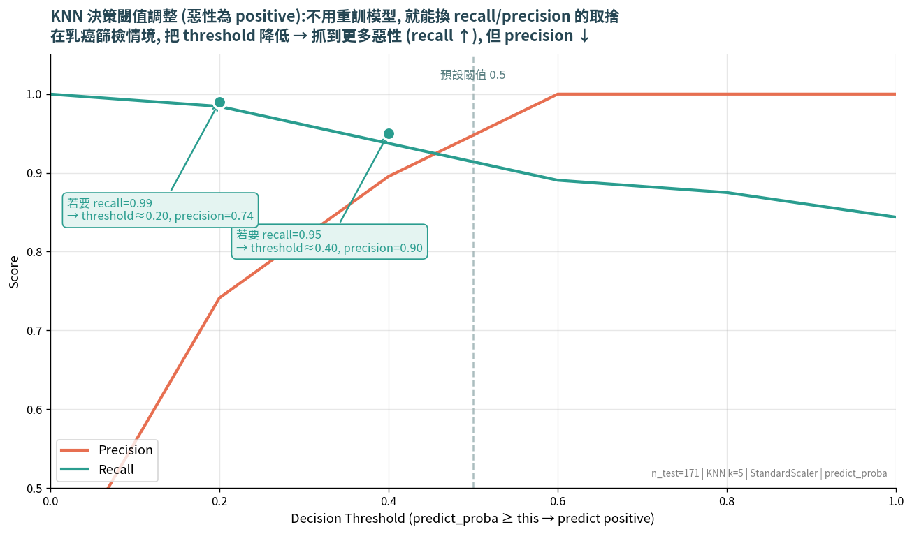
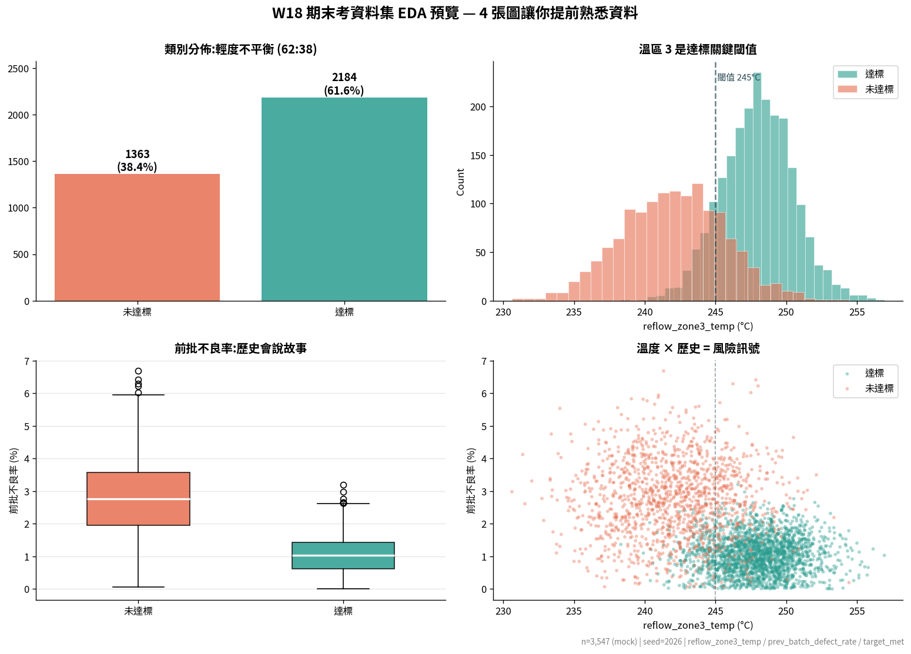

| Step | 思考 | 估算 |
|---|---|---|
| 見 | 30 秒能看幾張圖? | 平均 3-5 張 |
| 見 | 12 頁含多少圖? | 通常 10-15 張 |
| 識 | 主管看的順序 | 首頁圖 → 結論 → 反推細節 |
| 識 | 如果首頁圖沒抓眼球? | 後面 11 頁 = 廢紙 |
| 謀 | 解法:把報告的 90% 心力放在 1 張首頁圖 | |
| 斷 | 期末考的「首頁圖」佔 20% 分數 |
(a) SCQA × 見識謀斷 在 ML 報告中的對應
| SCQA | 見識謀斷 | ML 報告章節 | 圖表類型 |
|---|---|---|---|
| S 情境 | 見 | 「我們有什麼資料?」 | KPI 卡、資料規模 bar |
| C 衝突 | 識 | 「資料不平衡 / 特徵共線 / 模型偏誤」 | Heatmap、Imbalance bar、Bullet |
| Q 問題 | 識 | 「我們要解決什麼?」 | (文字 + 假設說明) |
| A 謀 | 謀 | 「比較了哪些模型?」 | Slope chart、Radar |
| A 斷 | 斷 | 「為什麼選這個模型?」 | 模型卡 + Confusion + Feature Importance |
(b) 三層敘事節奏 — 每張圖有 3 層字:標題、圖、註記
| 層次 | 寫什麼 | 範例 |
|---|---|---|
| 標題 | 結論 / 觀點 | ❌「混淆矩陣」 ✅「KNN 漏判 18% 的惡性病例, FN 是 FP 的 5 倍」 |
| 圖 | 視覺證據 | 混淆矩陣本身 |
| 註記 | 背景脈絡 | 「測試集 n=171, k=5, stratified split」 |
(c) 首頁圖 (Hero Chart) 設計七原則
以下 4 張圖示範 W17 的核心:同一份資料, 不同標題、不同設計, 讀者拿到的訊息完全不同。




| 維度 | 權重 | A (90+) | D (< 70) |
|---|---|---|---|
| K1 技術正確 | 25% | 程式無誤、模型訓練合理、評估指標完整 | 程式跑不動 |
| K2 視覺編碼 | 20% | FT Vocabulary 用對、配色一致、無 chartjunk | 3D 圖、spectral 配色畫類別 |
| S1 「四個必畫」 | 15% | 4 張齊全且優化 | 缺 ≥ 2 張 |
| S2 首頁圖 | 20% | 七原則全達 + 結論式標題 | 達 < 3 點 |
| A 敘事 SCQA | 20% | 4 階段完整 + 簡報結構一致 | 只列數據無敘事 |
smt_yield_dataset_W18.csvtarget_met(1=達標 ≥98.5%, 0=未達標)完整題本與評分 Rubric 詳見 final_exam_practical_brief.md 與 final_exam_template.md(已上傳 TronClass)。
打開你 Visit 1 / Visit 2 的 AI 鷹架產出(混淆矩陣、雷達圖、PCA 投影任選 1 張), 與 AI 互動 10 分鐘。
| 時段 | 動作 | 時間 |
|---|---|---|
| 09:10 - 09:25 | 環境檢查 + 領題 + 讀資料卡 | 15 min |
| 09:25 - 11:00 | 實作主體:EDA → 訓練 → 視覺化 → 敘事 → 簡報 → 上傳 | 95 min |
| 11:00 - 11:20 | 收卷 + TA 校驗檔案完整性(不抽問) | 20 min |
學號_姓名_W18Final.ipynb +
學號_姓名_W18Hero.png +
學號_姓名_W18Slides.{pdf,pptx,key}
Allen:「這份彙整就是你期末考的考前小抄—— 考前 5 分鐘再看一遍, 前 15 分鐘的 EDA 就不會慌亂。」